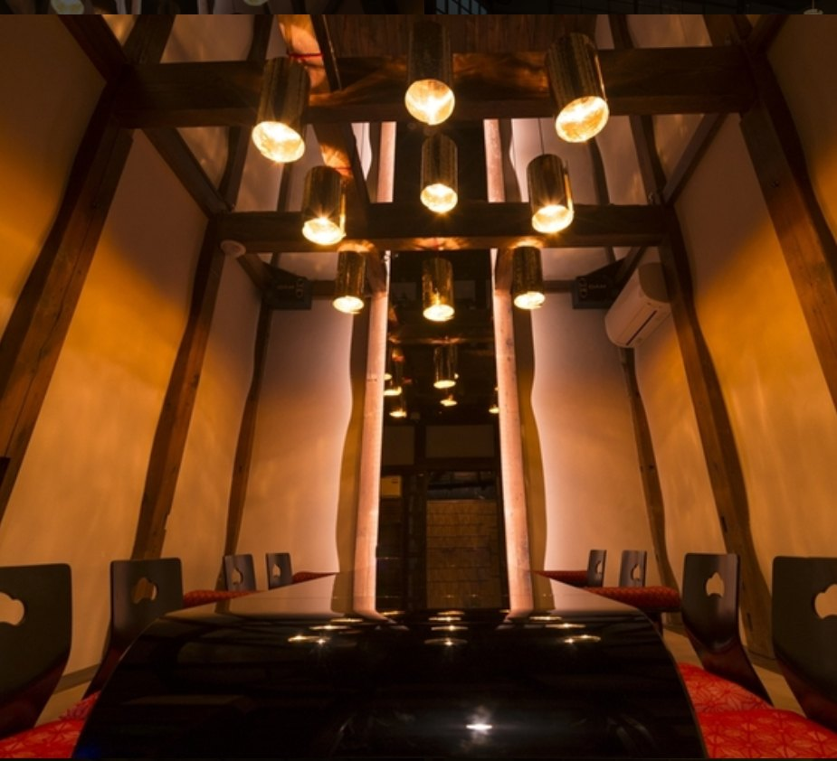
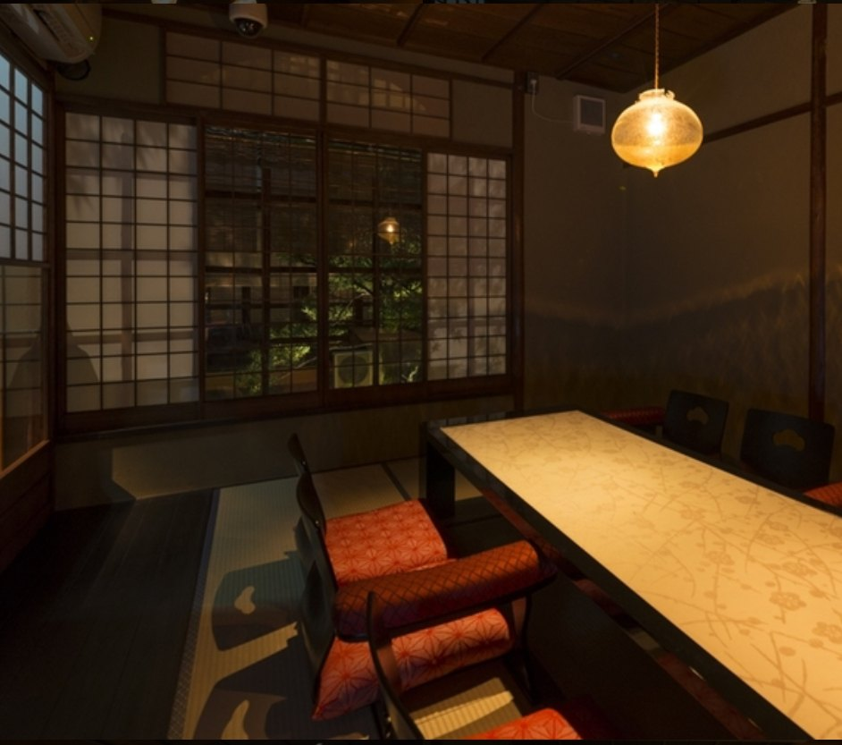
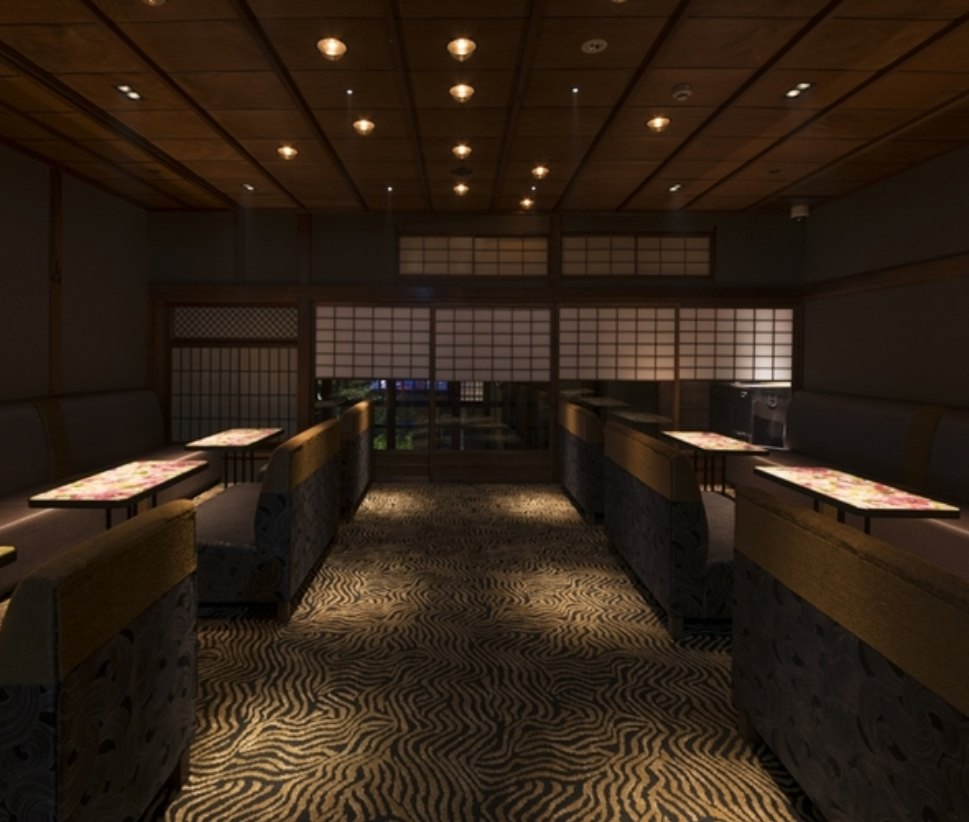

祇園最大級のキャバクラ「華小町」はどんなお店？京町家をリノベーションした4フロア
NIGHT STYLE 編集部

京都・祇園のキャバクラ華小町（はなこまち）は、祇園で最大級のフロア面積をほこる大型店。時給5,000円〜12,000円前後で、ドレスとヘアメイクもそろっています。お店の特徴と働き方をまとめました。
どんなお店？
築130年以上の京町家を、和洋折衷にリノベーションしたデザイナーズキャバクラです。地下1階〜地上3階の4フロアに、テーブルは33卓。個室が7部屋あり、そのうち2部屋はVIPルームです。
出勤人数・在籍している女性の数とも祇園でトップクラス。カイザーグループの系列店です。




お金のこと
| 時給 | 5,000円〜12,000円前後（経験や面接で決定。それ以上の希望も相談可） |
|---|---|
| 日払い | OK |
| 勤務 | 週1日〜・シフト自己申告・短期OK・終電上がりOK |
| 営業時間 | 19:00〜LAST（日曜定休） |
| 衣装・ヘアメイク | レンタルドレス無料・専属ヘアメイク在籍 |
| 待遇 | ノルマなし・寮あり・送りあり・個人ロッカー・履歴書不要 |
| 場所 | 京都市東山区富永町105（京阪「祇園四条駅」徒歩3分） |
働き方
- 週1日から、シフトは自己申告制
- 終電で上がれる・短期もOK
- 新作・ブランドのドレスを無料で借りられ、専属のヘアメイクも在籍
- 寮・送り・個人ロッカーあり
どんな人に向いている？
- 高時給で働きたい
- 大きなお店の華やかな雰囲気で働きたい
- 京都・祇園で働いてみたい
18歳以上の方が対象です（高校生は応募できません）。
応募のしかた
- LINEか電話で「NIGHT STYLEを見た」と伝える
- 面接・体験入店の日を決める（顔写真付きの身分証明書を持っていく）
- お給料・シフトの説明を聞いて、手ぶらで体験入店へ
募集要項・応募はこちらにまとめています。
華小町の求人を見る※この記事は、お店から提供された情報と公開情報をもとにNIGHT STYLE編集部がまとめたものです（2026年11月17日時点）。お給料・勤務条件は、面接のときに必ずお店へ確認してください。NIGHT STYLEは求人情報を掲載する広告媒体です。お仕事の紹介・あっせんは行っていません。